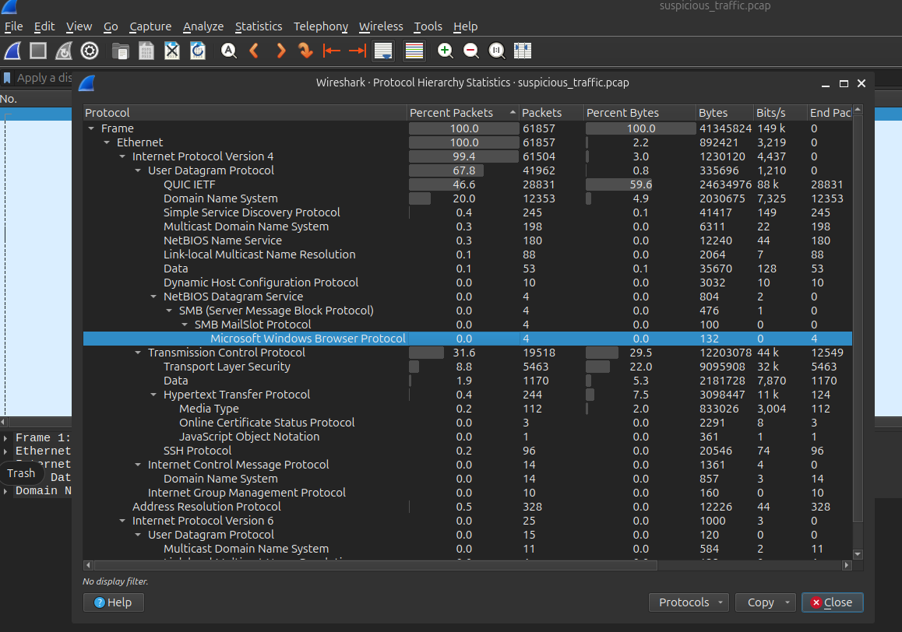
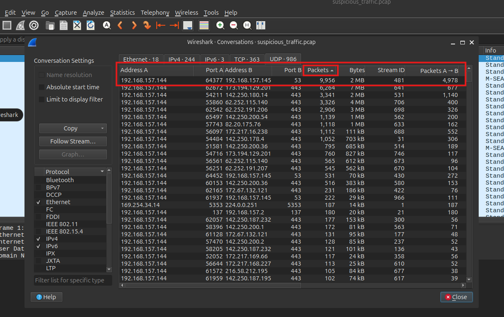
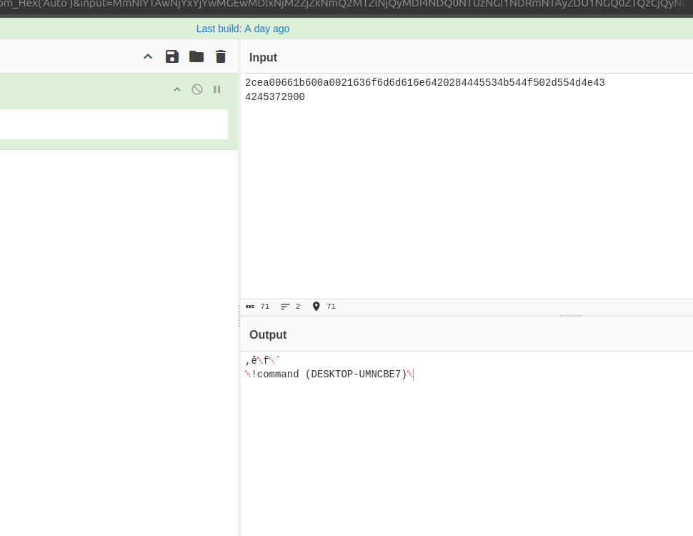
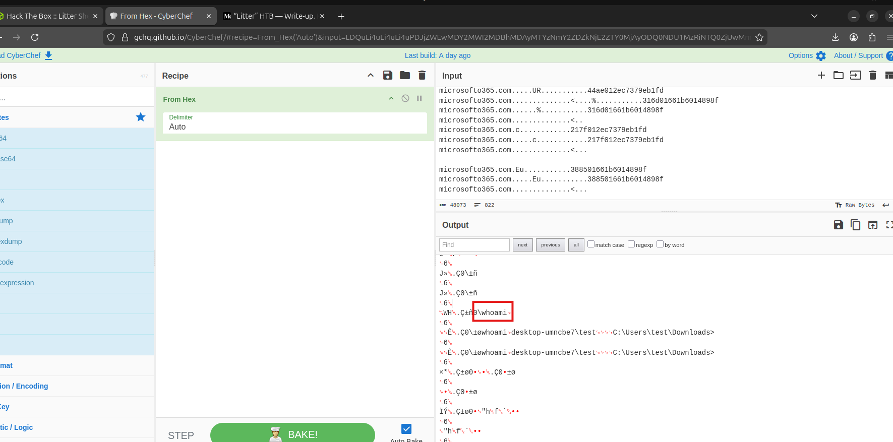
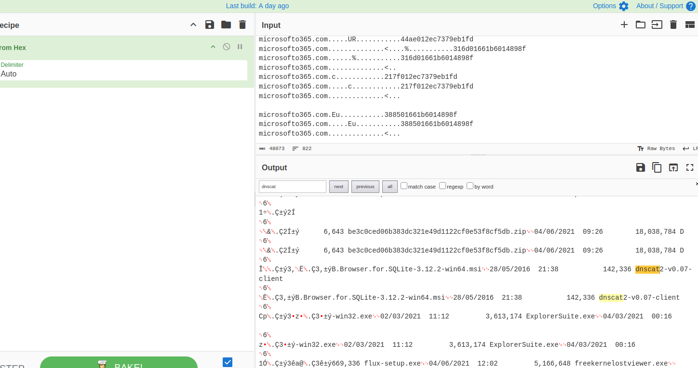
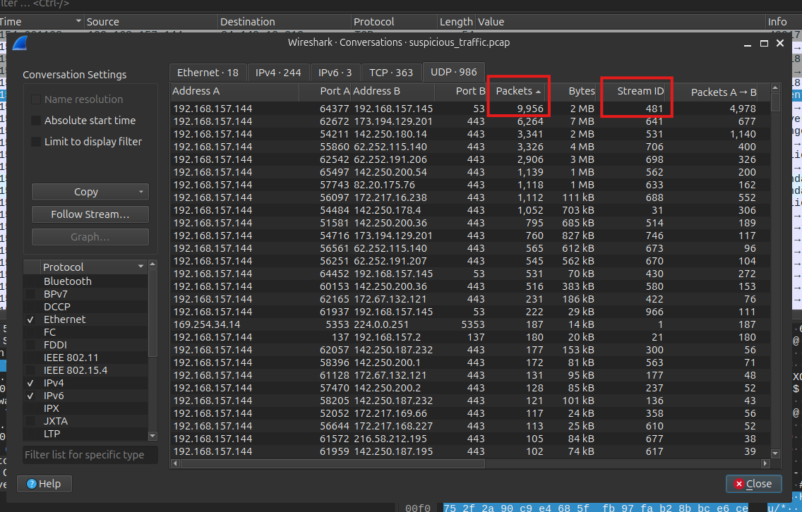
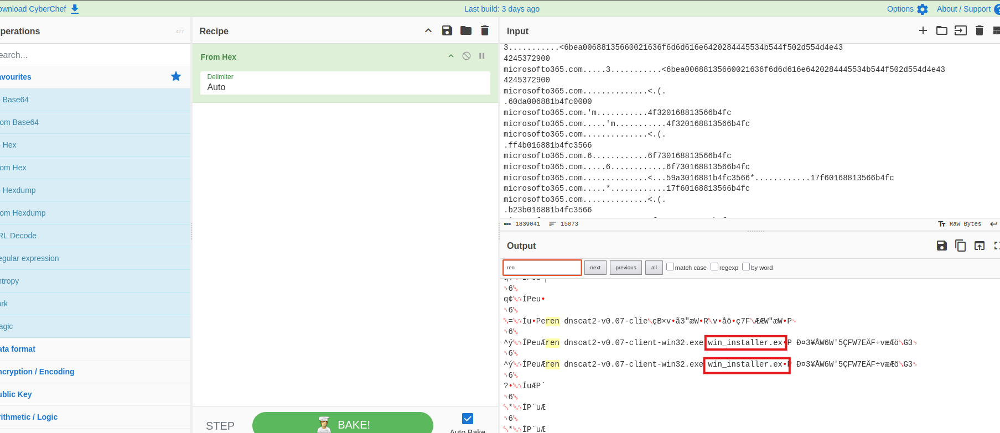
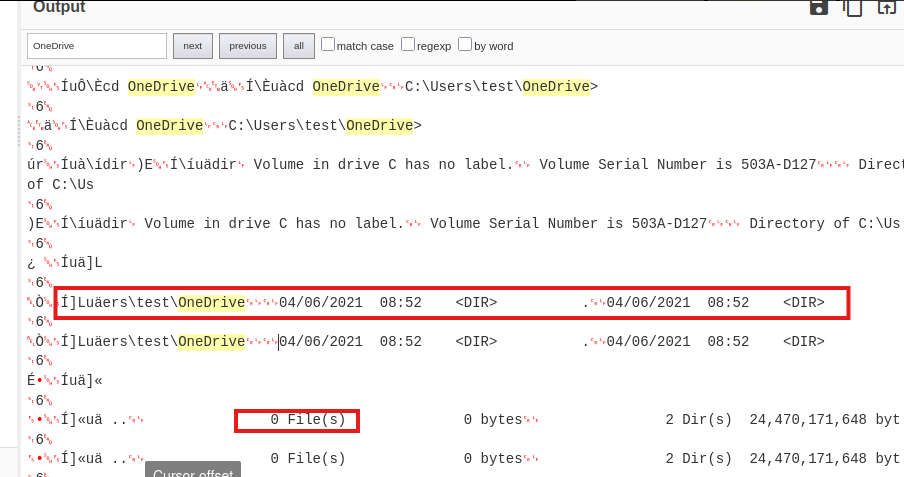
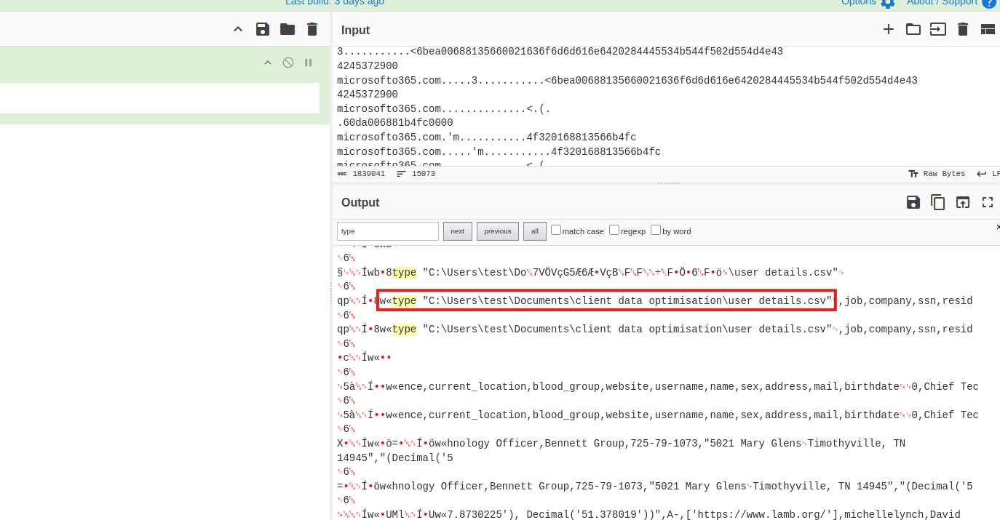
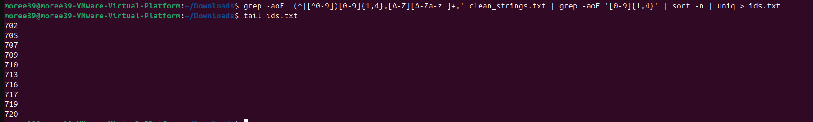

Litter
Overview
Litter is a Blue Team Sherlock focused on investigating suspicious DNS traffic inside a packet capture. The analysis identifies DNS as the abused protocol, pivots into heavy UDP conversations, decodes hidden command activity with CyberChef, confirms dnscat2 usage, and reconstructs how the attacker enumerated cloud storage and stole a PII CSV file.
Evidence and Tools
The investigation was based on packet capture analysis and stream decoding.
- Wireshark for protocol hierarchy, conversations, and UDP stream analysis.
- CyberChef for decoding hex-encoded DNS tunnel content.
- strings, grep, sort, and uniq for extracting record IDs from decoded output.
Task 1 - Suspect Protocol
Question: At a glance, what protocol seems to be suspect in this attack?
I started with a protocol overview instead of reading every packet manually. In Wireshark, I opened
Statistics > Protocol Hierarchy and looked for unusually high-volume protocols.
Statistics > Protocol HierarchyDNS immediately stood out with a large amount of traffic. DNS is normally a support protocol, so this amount of DNS traffic in a data theft scenario suggested tunneling, exfiltration, beaconing, or command-and-control.

Answer:
DNSTask 2 - Suspect Host
Question: There seems to be a lot of traffic between our host and another. What is the IP address of the suspect host?
Because DNS was the suspect protocol, I checked UDP conversations in Wireshark through
Statistics > Conversations > UDP. The largest UDP conversation was between the local host and
another system using port 53.
192.168.157.144:64377 -> 192.168.157.145:53
Since 192.168.157.144 appeared to be the compromised host, the other side of the heavy DNS
traffic was the suspect host.

Answer:
192.168.157.145Task 3 - First Attacker Command
Question: What is the first command the attacker sends to the client?
I followed the suspicious DNS/UDP stream between 192.168.157.144 and
192.168.157.145, copied the stream content, and decoded the hidden data in CyberChef using
From Hex.
Follow UDP Stream
Copy stream content
CyberChef: From Hex
The decoded output showed shell activity. The first real command sent by the attacker was
whoami, followed by the host response.

Answer:
whoamiTask 4 - DNS Tunneling Tool Version
Question: What is the version of the DNS tunneling tool the attacker is using?
I reused the decoded DNS stream from the previous task and searched for dnscat. The decoded data
contained the tool name and version string.
dnscat2-v0.07-client
Answer:
v0.07Task 5 - Renamed Tool
Question: The attackers attempt to rename the tool they accidentally left on the client's host. What do they name it to?
I followed the longest UDP stream, stream 481, copied the full content into CyberChef, decoded it
with From Hex, and searched for the Windows rename command ren.

The decoded shell activity showed the attacker renaming the dnscat2 client binary.
dnscat2-v0.07-client-win32.exe -> win_installer.exe
Answer:
win_installer.exeTask 6 - Cloud Storage File Count
Question: The attacker attempts to enumerate the user's cloud storage. How many files do they locate in their cloud storage directory?
I searched the decoded DNS stream for cloud storage paths and found references to
C:\Users\test\OneDrive. The attacker ran a directory listing command inside that folder.
The command output showed 0 File(s), meaning the OneDrive directory did not contain files.

Answer:
0Task 7 - Stolen PII File Location
Question: What is the full location of the PII file that was stolen?
I searched the decoded stream for commands that read file contents, especially the Windows
type command. The attacker used it on a CSV file under the user's Documents folder.
The output contained PII-related fields such as ssn, name, address,
mail, and birthdate, confirming it was the stolen file.

Answer:
C:\Users\test\Documents\client data optimisation\user details.csvTask 8 - Number of Stolen PII Records
Question: Exactly how many customer PII records were stolen?
I saved the decoded CyberChef output to a text file. Because the CSV output was noisy and partially duplicated, I extracted readable strings and searched for numeric record IDs used in the CSV.
strings -a decoded_stream.txt > clean_strings.txtgrep -aoE '(^|[^0-9])[0-9]{1,4},[A-Z][A-Za-z ]+,' clean_strings.txt | grep -aoE '[0-9]{1,4}' | sort -n | uniq > ids.txt
The records were indexed starting from 0, and the highest ID found was 720. That means the
total number of records was 720 - 0 + 1.

720 + 1 = 721Answer:
721Attack Chain
1. DNS traffic stands out in the capture
2. Heavy UDP conversation identifies the suspect host
3. DNS tunnel content is decoded from hex
4. dnscat2 activity is confirmed
5. Attacker renames the tunneling client
6. OneDrive is enumerated
7. PII CSV is read from Documents
8. 721 customer records are confirmed stolenKey Takeaways
- Protocol hierarchy is a fast way to identify suspicious traffic volume.
- DNS tunneling can hide interactive command activity inside normal-looking DNS traffic.
- Following high-volume UDP streams can reveal the attacker command channel.
- CyberChef is useful for quickly decoding encoded stream content during network investigations.
- Counting extracted record IDs can validate the scope of stolen data.